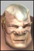

| Author | Thread |
Zodathira
EleetRegistered: Jan 2003
Posts: 10 |  Ok MAs are the number one charater thats been Nerfed Ok MAs are the number one charater thats been Nerfed100 Times Fancom has Nerfed us to number 1 ease target to kill in pvp.I worked hard on my ma at lvl80 I have lvl150 implanets on my charater lvl140 armor with lvl150 Shens 4k hp and 27 nanos attack of 878 with all buffs Grandmaster speed settings
and I cant even do over 342 damage on bloody talk about being nerfed every update that i have seen fancom has lowered the mas damage to point it sucks so bad
we can last 5secs with any profession in the arena unless we are troxes how daul weild parry sticks Thats sucks!!
we have no defensive are armor is one of lowest in the game NTs with Cyber have more protection then we do not much hp to back it up
whats a rip off they tell us Agil and sense mas are the best
MAs play no part in this game
Other then killing mobs little does that matter no one cares how many stupid mobs u killed they care about how many players u killed
for 14 updates u have degrading ma until the point that there biggest gimp players in AO
engenner
dont matter
all can beat mas
Thats not right I worked to hard on my ma for u mass it up
no way i can ever beat a any other class
I am so post to udar and i dont
All money time effert i put into my ma u should be nice enough to make them where they can pvp and do damn good at it |
Ainur
Leetas
 Registered: Nov 2001
Posts: 21 | MAs are uber compared to how we were 9 months ago :P
Not saying we've not been nerfed since 14.6, but saying this is a thing that's been going on for ages is a bit off.
___________
Ainur |
Intenseheat
Phear Leet
 Registered: Nov 2001
Posts: 281 | 14 updates? Are you on the drugs, boy? I'm almost just realizing that this is your 2nd "MAs are nurfed" thread on this board, which is a lil bit disheartening. I replied in that one with relevant content, and I shall do the same here.
14 updates ago we did minimum damage all day every day, all MA attacks were shot to hell, and we always did melee damage (fists didn't change it). FC has helped us out a lot. This is just a setback. I'm actually pretty good in the arena against NTs without NS, MPs, and fixers without GA. Granted, before I could take Soldiers, doctors, engies, and adventurers too (one might say crat too but root+pet is pretty hard)
And MA armor is the worst? How? Armor isn't defined by prof... so you're just 100% wrong there. |
Xzeepo
What?
 Registered: Dec 2001
Posts: 55 | Zod can u please stop the MA nerf crap???!
You will get your turn! That it's just not now! So you have to wait for a bit! |
labrutte
Phear LeetRegistered: Feb 2002
Posts: 164 | Ok ok ok another whiner 
Read my lips :
THERE IS NOT ONLY PVP IN THIS GAME
And in pvm ma are really good.
So stop to cry and play an engin you will understand what sux mean  |
labrutte
Phear LeetRegistered: Feb 2002
Posts: 164 | Forgot something, zod if you are so dumb to use one of the lowest armor stop to play
Or just raise some other abilities to wear some decent armor. |
ocra12
Supa Leet
 Registered: Dec 2002
Posts: 63 | Yes MA´s need pvp and big nasty bosses love.
BUT STAND IN LINE!
You havnt been nerfed for that long, and that doesnt include regular missions. You are soooo many times better than me in pvm.
And I cant really do anything in pvp either.
Its just the title that I dont like about this thread.
Think about engies, they cant do ANYTHING!
(ok, might do some tradeskills, not so sure about how many levels they will get tho)
stop yer whining and stand in line. |
Kzak
Supa Leet
 Registered: Mar 2002
Posts: 528 | On tradeskills: Yes, I do them. But to level from tradeskills? Highly unlikely, except for on very low levels.
At level 166, I need over 22 million XP for the next level.
For me to gain one level with tradeskills does now require me to complete e.g. 22 000 implant tradeskill-steps at QL200. And believe me, that will take many, many times longer than even soloing those 22 millions of XP. |
Lumin
Phear LeetRegistered: Nov 2001
Posts: 240 | So MA is the nerfest prof ?  |
Rugger807
Supa Leet
 Registered: Jan 2002
Posts: 171 | Wow, dont you love it when someone makes a funcomm lovechild char then they take away something? This has a fairly distinct feel...what was it...oooooh yeah METAS. You know when Metas were funcomms lovetoy all these new metas popped out now very few play.... why is that? I just bet you will become a fixer within the week as all you want is to completely own everyone else.
Dont ever start on engineers. They dont stand a chance against anything |
Yazule
Supa Leet
 Registered: Jul 2001
Posts: 1383 | quote:
Originally posted by Rudeboyz
Wow, dont you love it when someone makes a funcomm lovechild char then they take away something? This has a fairly distinct feel...what was it...oooooh yeah METAS. You know when Metas were funcomms lovetoy all these new metas popped out now very few play.... why is that? I just bet you will become a fixer within the week as all you want is to completely own everyone else.
Dont ever start on engineers. They dont stand a chance against anything
now it is enforcer love clones lol
gotta love the "I wana be ubar" mentality
been more "I am a new enforcer help me" threads in the enforcer section in the past month or so than in all the time since live lol. |
ocra12
Supa Leet
Registered: Dec 2002
Posts: 63 | Yazule, acording to Jodocast, enforcers are the most nerfed rpof in the game, dont forget that (ROFLMAO)
A lot of new fixers too huh |
Soulmartyr
EleetRegistered: Nov 2002
Posts: 28 | Re: Ok MAs are the number one charater thats been Nerfed quote:
Originally posted by Zodathira
all can beat mas
Zodathira, have you considered perhaps you have IP in the wrong spots??
I'm a Lvl87 Opifex MA now. I have been in 5 PvP "matches" the past month. The highest level I killed was a Lvl92 Clan Enf, which was Atrox. That was my 4th match, and a miracle. He wanted a rematch, and well, the fifth match was a loss for me. It was still a shocker that I pulled of a win against a Lvl92 Atrox anything.
Perhaps you should change your tactics and take a hard look at the armor/implants you are using. I know several MA's in "The Dojo" who PvP, and have won against chars higher than them.
It's all about how well you research what your character can use and hack, and how well you plan your character. With the exception of a temporary Nano Armor Cloak, I'm using QL110 Decus armor, which does wonders for an Opifex MA.
Just keep your head up, mature beyond the term "nerf", and try something different.
-Soulmartyr |
Darksyphon7
Phear Leet
 Registered: Jun 2002
Posts: 93 | I cry every night over the fact that MAs are undoubtedly the worst profession in the game. Their fists don't follow them from room to room, leaving them so vulnerable..they don't have heals, they dont have crit buffs, they dont have jack ****...poor MAs... |
DaveDread
workworkworkwork
 Registered: Nov 2001
Posts: 565 | MA's do just fine in most situations, with 2 major exceptions: PvP and high level Bosses. There, MA's are surpassed by most professions.
The PvP issue is of course directly related to the different set of rules for PvP, most notably that a fast-hitting, critreliant melee profession gets hurt hard by reflects, crit% reduction and roots/snares.
The high level boss issue is a basic game mechanics problem, where the MA line of defense (evades) become invalidated when faced with a high enough attack rating. Reflect and HP do not suffer from the same fate, thus GA4 fixers (here the evades still work), Soldiers and Enforcers are the only tank options. Add in a pretty low attack rating, the way parry works at the moment, and how the arsenal on MA special attacks are unusable and the damage output you see in a normal team mission drop through the floor.
MA's have gotten steady improvement since about patch 13.6 with increased damage output and some interesting and useful items. However, so have other professions, and while not all have gotten better stuff, the relative power of the MA's have been in decline. Then, we got hurt extremely hard by the combo of roots/crit reduction in the latest patches, and that's what we're complaining about. |
Nival
TriOpticon
 Registered: Jun 2002
Posts: 146 | why do lvl 50-100 MAs whine we're nerfed!
low lvl MAs doesent depend on critts why the hell are they whining about this?
i suggest all you low-lvl-whiners level up to 190ish then see how bad it is
MAs are not nerfed low lvl only high lvl i dont understand why people dont understand this
if you die in pvp at low lvl then you just suck end of story. |
Nival
TriOpticon
Registered: Jun 2002
Posts: 146 | and MAs can still kill people i went from
Freshman to apprentice after the nerf. |
Nival
TriOpticon
Registered: Jun 2002
Posts: 146 | |
Nival
TriOpticon
Registered: Jun 2002
Posts: 146 | i just hope fc fixes the MA dmg cap at 1k MA skills,
people are whining about MAs HP aswell i got 9k hp unbuffed at lvl 197 i dont see why we need more |
Darksyphon7
Phear Leet
Registered: Jun 2002
Posts: 93 | thank you for the 4 consecutive posts :/ |
All times are GMT.


 Anarchy Online Bulletin Board > Future Anarchy > Next patch > Ok MAs are the number one charater thats been Nerfed
Anarchy Online Bulletin Board > Future Anarchy > Next patch > Ok MAs are the number one charater thats been Nerfed Last Thread Next Thread
Last Thread Next Thread 
 January 8th, 2003 23:15
January 8th, 2003 23:15